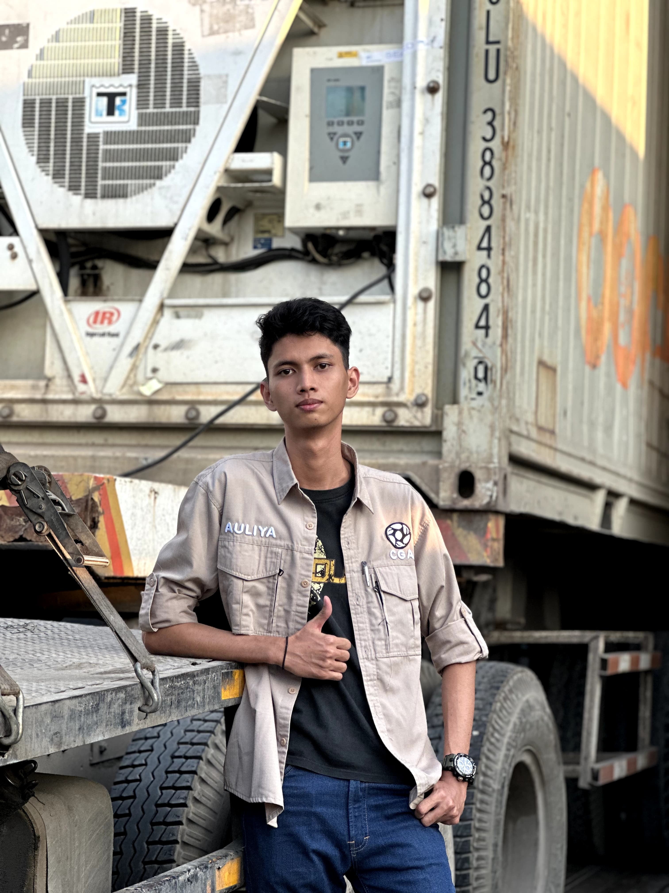
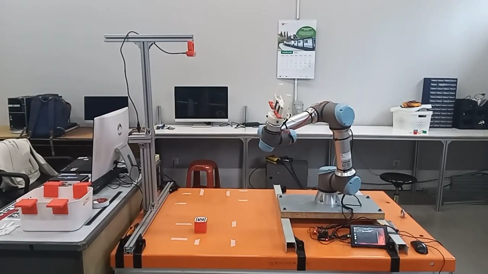
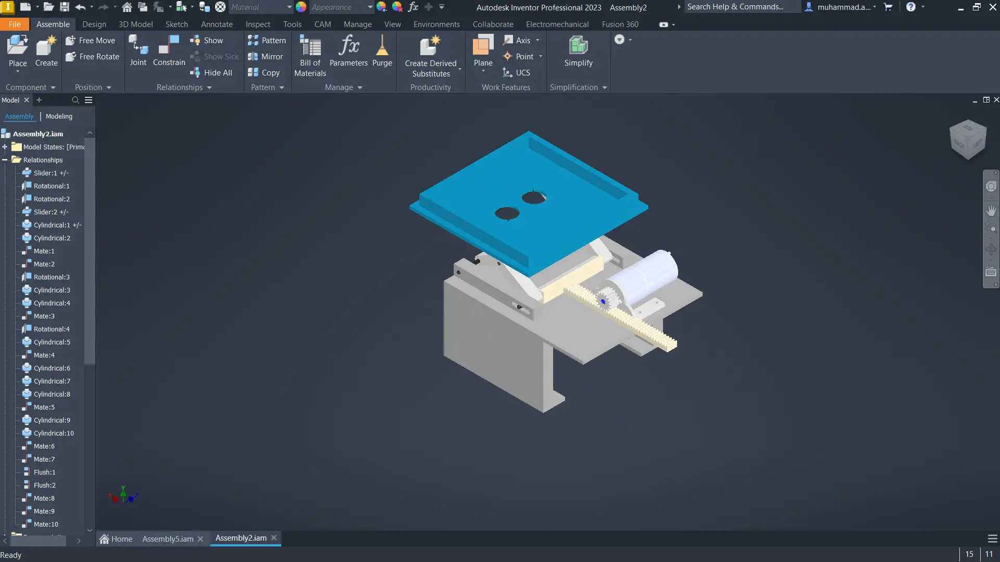
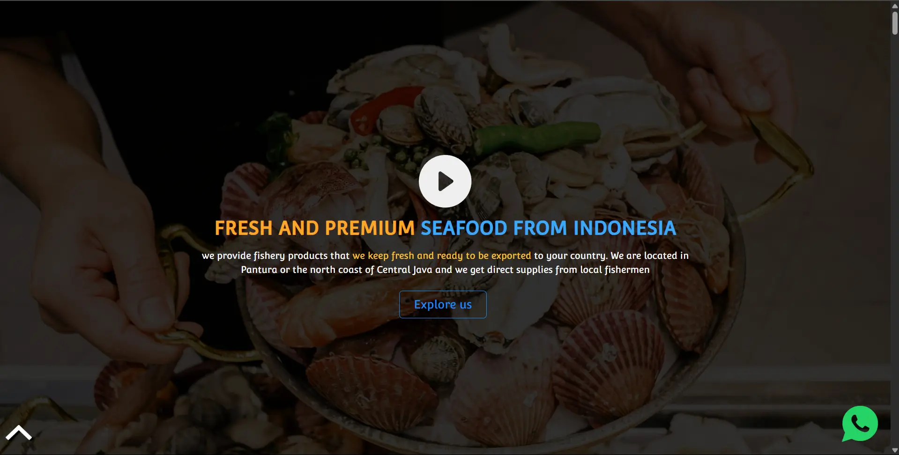
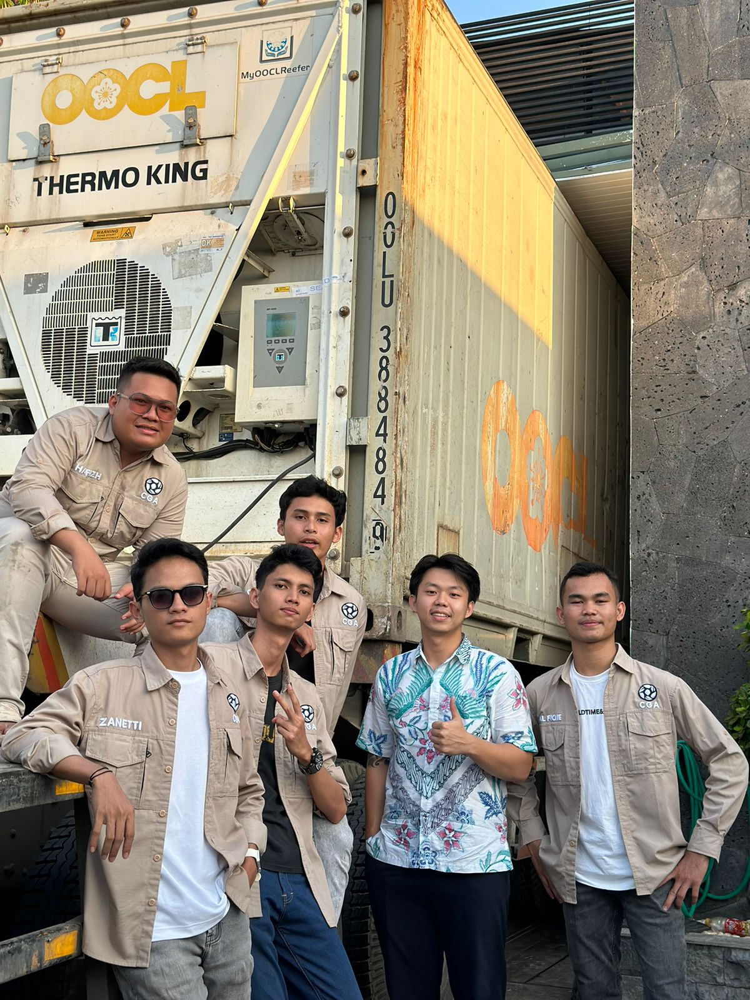
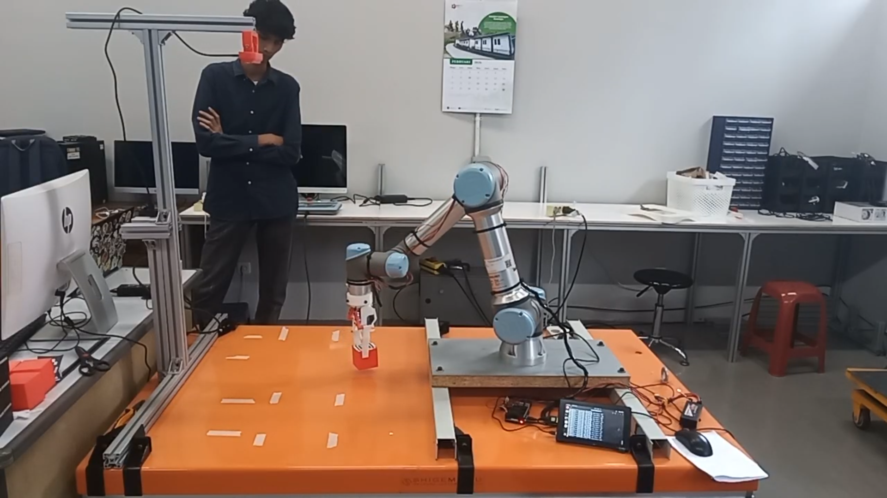
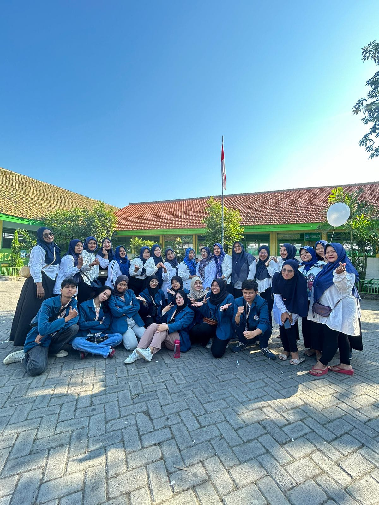
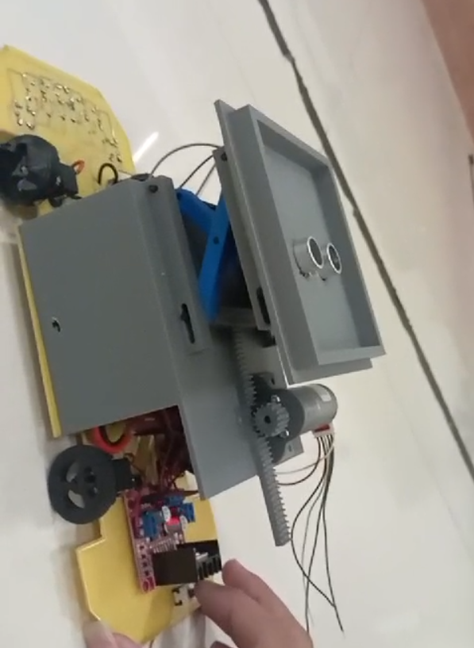
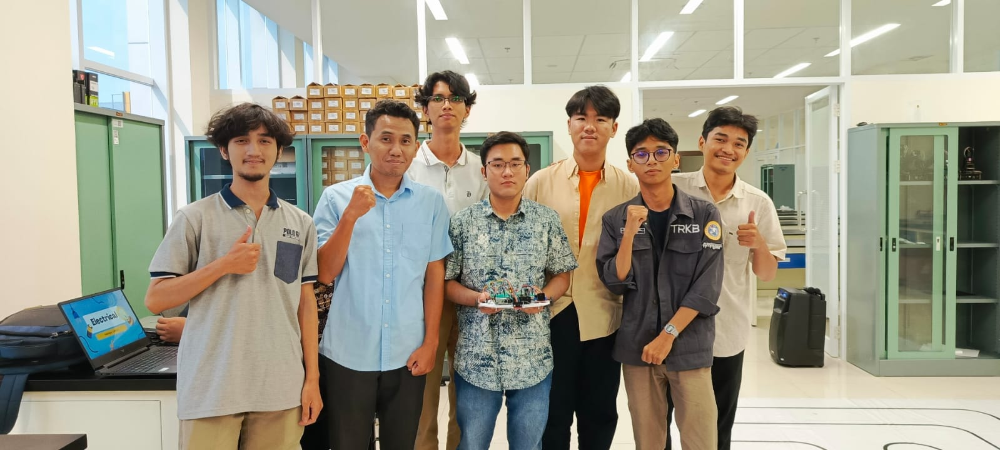

Architecting the next generation of autonomous systems where Machine Learning meets the grace of robotic precision.


Designing an autonomous pick-and-place system for the UR5e manipulator using the Proximal Policy Optimization (PPO) algorithm. The reinforcement learning environment utilizes dynamic object spawning techniques in simulation to ensure robust training and motion efficiency before real-world deployment.
ACCESS TELEMETRY →
Developed an autonomous Automated Guided Vehicle (AGV) capable of lifting objects and placing them in designated locations. The expedition focused heavily on mechanical precision, lifter integration, and reliable control logic.
ACCESS TELEMETRY →
Engineered the official brand website for an exporter company, optimizing the architecture for SEO visibility and comprehensive data management to drive business intelligence insights.
ACCESS TELEMETRY →Foundation of my technical sovereignty, focusing on the intersection of physical systems and intelligent algorithms.
Led technical initiatives including official brand website development, SEO optimization, and comprehensive data management for strategic business insights.
Led and coordinated a multi-disciplinary robotics team, managed detailed task timelines, and resolved cross-division issues to ensure project success.
Designed and integrated a precise lifting mechanism for an Automated Guided Vehicle (AGV) robot, handling end-to-end assembly and troubleshooting.
Spearheaded community empowerment initiatives and managed student coordinators in the KKN BBK 4 program, collaborating with local village authorities to implement impactful social development projects.
Spearheaded Deep Reinforcement Learning research for UR5e robot arms, utilizing object spawning techniques in simulation to enhance training robustness and motion efficiency.





Whether you wish to discuss autonomous systems, collaborate on AI projects, or establish communication, my telemetry link is active.